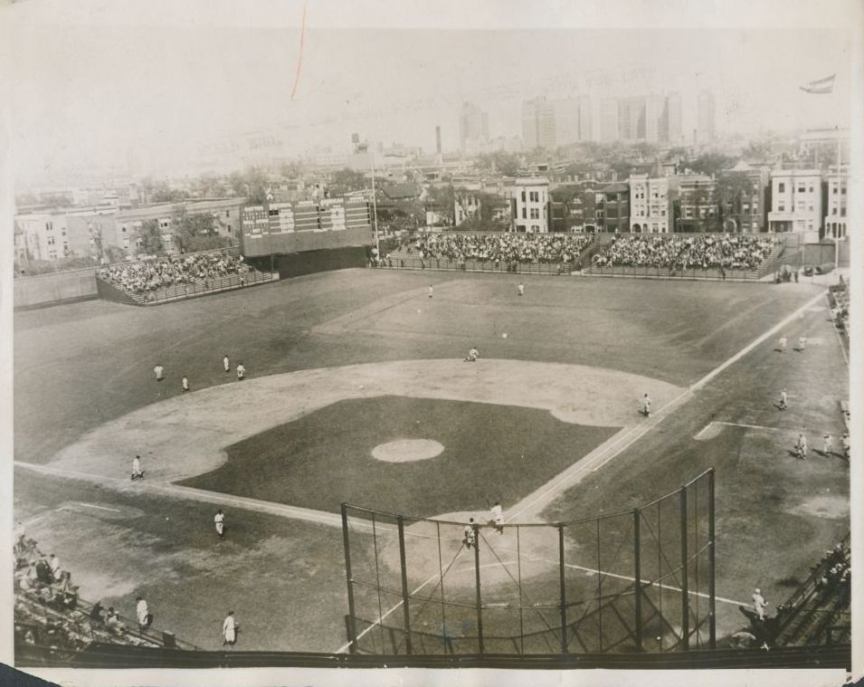

Nicknamed the Friendly Confines, Wrigley Field is baseball’s second oldest ballpark, where fans come to see the ivy covered outfield walls, the classic hand-operated scoreboard, the marquee outside the homeplate entrance and the Cubs play ball!. Stepping into Wrigley Field today is like stepping back in time. Fans come out to Wrigley Field whether the Cubs are winning or losing and the ballpark has been the home to many historic moments from Babe Ruth’s called shot in 1932 and the home of the 2016 World Series Champions.
The history of Wrigley Field dates to before the start of World War I when Charles Weeghman bought the Chicago Whales of the Federal League. Weeghman constructed his team a new ballpark in the largely undeveloped north side area of Chicago along Addison and Clark Streets which is now fully developed with businesses, residential areas and local Chicago hotels. Zachary Taylor Davis was hired to develop plans for the ballpark that was initially known as North Side Park until Weeghman named it after himself. Construction of the 14,000 seat ballpark began on March 14, 1914. The ballpark had only a one deck of grandstand in a V-shape, with wooden bleachers in the outfield. The $250,000 ballpark was completed by April 23, 1914 when the Whales played their first game at the ballpark. Original dimensions at Weeghman Field were 310 ft. (left), 440 (center), and 356 (right). It was the first ballpark to have permanent concession stands. Weeghman Field was home to the Chicago Whales for two years before the Federal League went bankrupt.
Located on the west side of Chicago, the Cubs played at the 14,000 seat West Side Grounds. They had played here since 1893 and by 1915 were struggling to attract fans. After the 1915 season Weeghman bought the Cubs and moved them to his ballpark on the north side for the 1916 season. The first Cubs game at Weeghman Field was on April 20, 1916. In 1920, Weeghman Field was renamed Cubs Park and Weeghman sold the club to William Wrigley Jr. Beginning in 1922 and then 1923, Cubs Park underwent several renovations. The grandstands were moved back 60 feet and wooden bleachers were added, increasing the capacity to 20,000. Major renovations began in 1926, when Cubs Park was renamed Wrigley Field. The grandstand was double decked, the playing field was lowered, and the bleachers in left field were removed. The capacity increased to 38,396. More renovations were completed at Wrigley Field in 1937. Bleachers were added in the outfield and the famous 27 by 75 foot hand operated scoreboard was placed behind the bleachers in centerfield. The most distinct feature was the planting of ivy at the base of the outfield wall. Before World War II, the grandstand in left field was circled so all the seats faced home plate instead of centerfield. Lights for Wrigley Field were originally to be installed for the 1942 season. However because of the United States involvement in World War II and the bombing of Pearl Harbor, Phil Wrigley donated the lights to the government.
Since the 1940s Wrigley Field has changed little. In 1981, the Tribune Company bought the Cubs. The company began talking about installing lights after the 1981 season. However, a fan group fought to keep night baseball away from Wrigley Field. On May 13, 1982, Illinois Legislature made baseball after midnight a violation in a facility that had not had night sports played before July 1, 1982. Also that year, an electronic message board was placed under the scoreboard in centerfield. In 1984 when the Cubs made the playoffs, MLB threatened that if the team made the postseason in the future, games would be moved to a location that had lights. Finally on February 23, 1988, the Cubs decided to install lights at Wrigley Field. The first night game scheduled for Wrigley Field was on August 8, 1988. However, rain cancelled the game after four innings, postponing it to the next day. In 1989, private boxes were constructed on the mezzanine level that was originally occupied by the press box and broadcasting booths. A press box and broadcasting booths were constructed in the upper deck directly behind home plate. After the 2003 season, the Cubs added 200 seats directly behind home plate bringing fans even closer to the playing field. Tradition was not lost with this addition, as the brick wall behind home plate remains. After the 2005 season, the Cubs added nearly 1,800 seats to the bleachers increasing the capacity to just over 41,000. For many years, Wrigley Field had been known as having one of the worst grass fields in the game because there was a crown in the infield that extended 40 feet into the outfield. Because of the crown, players would literally be running slightly up or down a hill on the field. After the 2007 season, the entire field was removed and replaced with a new drainage system and a bluegrass playing field.
The biggest transformation at Wrigley Field since the opening of the bleachers in 1937 began following the 2014 season. A $575 million project, named the 1060 project, began at the ballpark, that essentially overhauls the entire facility. Nearly every part of Wrigley Field will be upgraded over a five year timeframe. Before the start of the 2015 season work began in the outfield as the existing bleachers in left and right field were demolished. The Cubs pushed the exterior wall of the ballpark back onto Waveland and Sheffield Avenues in order to expand the bleachers, widen the concourse and add more concessions. Originally slated to be completed by the start of the season construction was delayed until late Spring, leaving the entire outfield closed for the first two months of the 2015 season. This project added 300 seats to the bleachers. The most striking addition to the ballpark is in left field, a 95 foot x 42 foot HD videoboard. Another 2,250 square foot videoboard was added in right field. However, the traditional hand-operated scoreboard remains in centerfield.
A number of renovations were completed by the 2017 season. The on-field home and visiting bullpens were moved under the bleachers in left (Cubs) and right (visiting team) field. The bullpens feature windows that allows fans to look in from the ground-level concourse. The outfield wall now has a set of green-tinted transparent doors that allow the players to watch the game from the bullpen. Four new rows of seats were added where the bullpens were previously. Behind homeplate, the entire lower deck was replaced and reconstructed. Underneath will feature the American Airlines 1914 Club (slated to open in 2018), above are 700 new padded premium seats. Outside the ballpark, the facade has been replaced, returning it to its original 1930s appearance. The west side entrance between Clark Street and Wrigley Field now features a new plaza known as the Park at Wrigley that allows fans to gather before games and provides a new entry into the ballpark. A multi-story structure is adjacent to the Park at Wrigley Field that features the Cubs 30,000 square foot clubhouse in the lowest level, a Cubs merchandise shops and stores on street level and team administrative offices in the upper levels.
The entire renovation project at Wrigley Field will not be completed until 2019. Other parts of the project include upgrading the steel infrastructure, a new roof to replace the existing wooden one. A two story retail and entertainment complex will be added to the right field corner of Wrigley Field at the corners of Addison Street and Sheffield Avenue. Additionally all of the concourses will be expanded and the restrooms/concession areas will be upgraded. This entire renovation project allows the Cubs to continue to play at Wrigley Field into the foreseeable future.
The biggest transformation at Wrigley Field since the opening of the bleachers in 1937 began following the 2014 season. A $575 million project, named the 1060 project, began at the ballpark, that essentially overhauls the entire facility. Nearly every part of Wrigley Field will be upgraded over a five year timeframe. Before the start of the 2015 season work began in the outfield as the existing bleachers in left and right field were demolished. The Cubs pushed the exterior wall of the ballpark back onto Waveland and Sheffield Avenues in order to expand the bleachers, widen the concourse and add more concessions. Originally slated to be completed by the start of the season construction was delayed until late Spring, leaving the entire outfield closed for the first two months of the 2015 season. This project added 300 seats to the bleachers. The most striking addition to the ballpark is in left field, a 95 foot x 42 foot HD videoboard. Another 2,250 square foot videoboard was added in right field. However, the traditional hand-operated scoreboard remains in centerfield.
Today, Wrigley Field is the last Federal League ballpark standing. Even with lights and now its modern videoboard, Wrigley Field remains one of baseball’s most old-fashioned parks. Wrigley Field has basically remained advertisement free, with advertisements on nearby buildings and a few in the ballpark. The neighborhood around Wrigley Field, called Wrigleyville is filled with fans on game day. Ballhawks as they are called wait on Waveland Avenue to catch homeruns during the game. Fans sit atop buildings behind Wrigley Field and watch the game. Ivy still covers the brick walls in the outfield, the scoreboard is still manually operated, and bleacher bums still sit in the bleachers in the outfield. Flags atop the scoreboard still remind fans whether or not the Cubs won the day before, and where they are in the standings. Because Wrigley Field is surrounded by the Wrigleyville neighborhood, parking can be a nightmare for games. It is recommended that fans take the CTA red line train to the Addison stop to Cubs games. Although it has been the exclusive home of the Cubs for many years now, Wrigley Field has hosted more professional football games than any other stadium in the nation. The one thing missing from Wrigley Field today, is former Cubs broadcaster Harry Caray, who used to sing “Take Me Out To The Ballgame” during the 7th inning stretch. For decades the Cubs had been known as “Lovable Losers” as fans suffered through multiple losing seasons. In 2016, led by superstars including Kris Bryant and Anthony Rizzo, the Cubs captured their first World Series Championship since 1908, facing the Cleveland Indians in the 2016 World Series.